所谓词项，就是表示事物名称和事物性质的名词类语词，在逻辑中，凡是能充当简单命题主项和谓项的词或词组，都称为词项。如果要研究命题内部结构的简单命题的推理，就必须把命题分解为词项。词项逻辑的主要内容包括直言命题及其推理、直言三段论等。
逻辑研究的命题分成简单命题与复合命题（不严格地说，这种分法有点类似于语言中的单句与复句之分）。简单命题就是指自身不再包含其他命题的命题。对简单命题来说，其组成成分是词项，它不再包含命题，因此，我们也可以把简单命题称作“原子命题”。直言命题是典型的简单命题，是演绎理论的基石，而直言推理是关于直言命题的推理。
直言命题也叫性质命题或直言判断、性质判断，是断定对象具有或不具有某种性质的简单命题。
（一）直言命题的组成
直言命题由主项、谓项、量项和联项四种词项组成。
标准式直言命题的一般模式由四个部分组成：首先是量项，其次是主项，再次是联项，最后是谓项。可以记为：
量项、主项、联项、谓项。
在直言命题中，谓项要对主项有所断定，因此，称这种命题为直言命题。从命题形式的角度说，直言命题可以看作是表达主项和谓项的包含关系的。如上例可以看作是断定了金属的集合包含于导体的集合之中。
下面再列表举例说明：
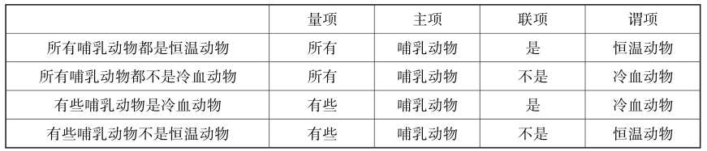
需要注意的是，“主项”和“谓项”在逻辑中的所指不同于“主语”和“谓语”在语法中的所指。上述陈述的主语包括量词“所有”在内，而主项不包括。同样，谓语包括系词“是”在内，而谓项不包括。
（1）质
每个标准式直言命题或是肯定的，或是否定的，这叫作命题的质。
如果一个命题肯定了类与类间的包含于关系，不管是全部地、还是部分地肯定，那么，它的质就是肯定的。因此全称肯定命题和特称肯定命题的质都是肯定的。它们的简写名称，即A和I，分别来自于拉丁文。
如果一个命题否定类与类间的包含关系，不管是全部地还是部分地否定，那么，它的质就是否定的。因此全称否定命题和特称否定命题的质都是否定的。它们的简写名称，即E和O。
（2）量
每个标准式直言命题或是全称的，或是特称的，这称为直言命题的量。
如果一个命题述及主项所指称的类的所有元素，那么，它的量就是全称的。因此A命题和E命题的量都是全称的。
如果一个命题只述及主项所指称的类的某些元素，那么，它的量就是特称的。因此I命题和O命题的量都是特称的。
（二）直言命题的种类
直言命题从质分，有肯定和否定两种;从量分，有全称、特称和单称三种。
由此，直言命题可分为六种基本类型：
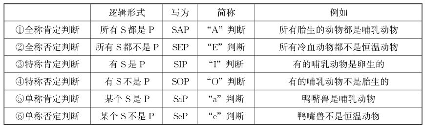
直言命题是关联两个类或范畴的命题，所说的类分别被叫作主项和谓项，而该命题主项的类全部或部分包含在谓项的类之内，或者排除在其外。从这个角度来看，单称命题作为全称命题的特例来处理。这样，直言命题的主要类型为四种：
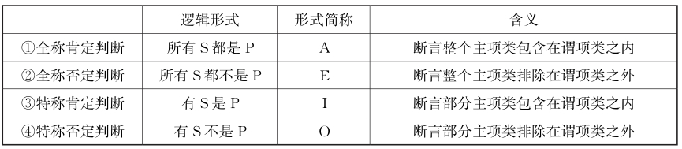
（三）直言命题的标准化
在日常语言中，直言命题的表达形式并不是那么规范的，存在着大量的不规范的、非标准的表达方式。因此，在考察直言命题的特征和直言命题间的关系时，需要把不规范的、省略的、非标准的直言命题变换为规范的、标准的直言命题表达形式。下面举例来说明：
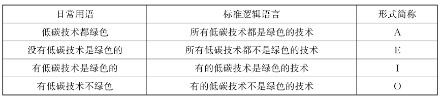
由于日常语言内容丰富、形式多样，因而无法找出一套通用的翻译规则。在各种情形中，最关键的是理解已知的非标准命题的真实含义，这样才能按照原意翻译成直言命题的标准式。虽然没有统一的翻译规则，但仍有处理一些特定种类的非标准直言命题的翻译技巧，下面分别简述：
①标准形式的各成分都出现，却没有按标准顺序排列的陈述句。
这需要把各个成分重新排列一下，使之成为标准式直言命题。
②具有各种全称量项的直言命题。
全称量项的标准表达形式是“所有”，在自然语言中，“每一”“任何”“每人”“任何人”“无论谁”“不管是谁”“每个……的人”等等，表达的意思都是全称。
③具有各种特称量项的直言命题。
特称量项的标准表达形式是“有”“有的”“有些”，在自然语言中，有时候把对象的数量或范围更加具体化一些，例如 “极少”“很少” “几个” “少数”“一半”“许多”“大多数”“绝大多数”“几乎全部”，这些表达都可转化为“有些……是”;而“不都是”则可表达为“有些……不是”等等。
④不含量词的直言命题。
这种情况只有考察该陈述所处的语境才能确定其含义。
⑤谓项为形容词或形容词短语，而非名词或类词项的直言命题。
这种情况，需要把形容词或形容词短语替换为指称由所有具有形容词表示之属性的事物所组成的类这样的词项。
⑥主要动词不是标准的联项“是”或“不是”的直言命题。
转化的方法是把主项和量项之外的所有成分看作类的定义特征。
⑦排斥命题。
含有“只”“只有”的直言命题通常叫作排斥命题，一般可以按以下途径转化为A命题：将主、谓项互换位置，把“只有”换为“所有”。因此“只有S是P”通常被理解为“所有P是S”。
当然，在某些语境中，“只”“只有”被用于表达某种更多的含义，这个时候就需要语境的辅助了。
⑧完全不像标准式直言命题但也可以有标准式翻版的命题。
从概念的外延间的关系来说，判断主项“S”的外延与谓项“P”的外延之间的关系，共存在五种：全同关系、被包含关系、包含关系、交叉关系和全异关系。
逻辑学中可把单称命题作为一种特殊的全称命题处理，因为从对主项概念的断定看，全称和单称命题有共同性。因此，直言命题的主要类型分为四种：全称肯定判断、全称否定判断、特称肯定判断、特称否定判断。归纳起来，可列表如下：
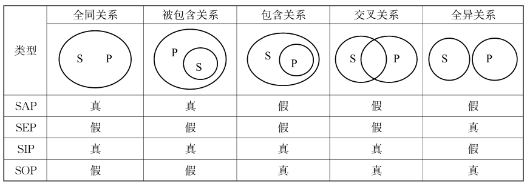
根据上表，可以清楚地看出具有同一素材的A、E、I、O四种判断之间的真假关系。
（一）对当方阵及其推理关系
对当关系就是具有同一素材的A、E、I、O四种判断之间的真假关系。根据对当关系，我们可以从一个判断的真假，推断出同一素材的其他判断的真假。
第一，所谓同一素材的判断，就是指具有相同主项和谓项的判断， S、P不变，仅逻辑常项变化。
第二，这里所谓的真假，并不是各种判断内容的真假，而是同一素材的A、E、I、O四种判断之间的一种相互制约关系。
四种主要的直言命题之间的真假关系可归纳为四种对当关系，分别是矛盾关系、反对关系、下反对关系以及从属关系。逻辑学中，用一个重要且广为应用的图示来表示，称为“对当方阵”，如图：
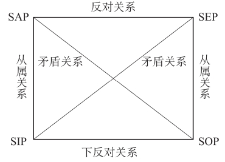
根据上图，可以清楚地看出具有同一素材的A、E、I、O四种判断之间的真假关系。直言命题的对当关系具体描述如下。
矛盾关系是A和O、E和I之间存在的不能同真、不能同假的关系。
（1）矛盾关系的真假推理
A和O之间， E和I之间，必然是一真一假。其真假制约关系如下：
若A真则O假，若A假则O真。
若O真则A假，若O假则A真。
若E真则I假，若E假则I真。
若I真则E假，若I假则E真。
（2）负命题
①负命题就是通过对原命题断定情况的否定而做出的命题。
若用P表示原命题，则﹁P表示负命题，其真值表如下：
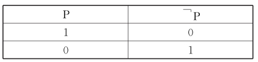
任何一个命题都可对其进行否定而得到一个相应的负命题。
②双重否定就是肯定。用公式表示为：﹁﹁P= P。
③日常语言的意义经常是含混的并且随语境而变化，而逻辑算子的意义是清楚的、准确的、不变的。
④矛盾关系是真正意义上的逻辑否定，这一点可能与日常语言中的否定不大相同。
日常生活中经常有否定特称判断以强调全称判断的情况。
⑤直言命题的负命题也不等于直言命题的否定命题。否定命题所否定的只是一个概念，而负命题所否定的则是一个完整的命题。
（3）负命题与矛盾关系
直言命题的负命题实质上即为对当关系中相应的矛盾关系命题。用公式表示如下。
①﹁SAP↔SOP包括两个推理:
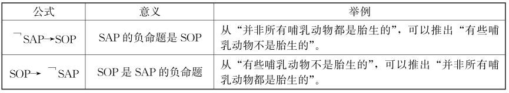
②﹁SOP↔SAP 包括两个推理：
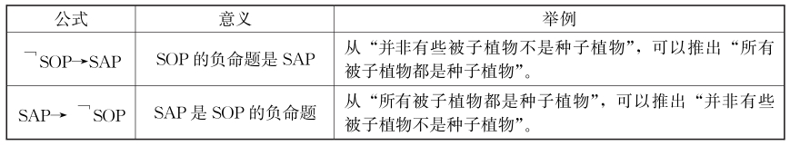
③﹁SEP↔SIP 包括两个推理：
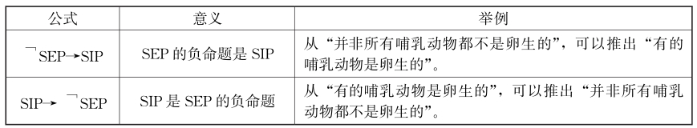
④﹁SIP↔SEP包括两个推理：
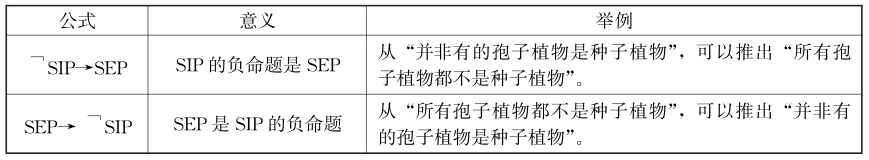
从属关系又称差等关系，这是A和I、E和O之间的关系。其真假制约关系如下：
①如果全称判断真，则特称判断真。
②如果特称判断假，则全称判断假。
③如果全称判断假，则特称判断真假不定。
④如果特称判断真，则全称判断真假不定。
反对关系是A和E之间不能同真，可以同假的关系。其真假制约关系如下：
①在A、E两个判断中，如果其中一个是真的，就可推知另一个是假的。
下反对关系是I和O之间可以同真但不能同假的关系。其真假制约关系如下：
①在I、O两个判断中,如果其中一个是假的,那就可以断定另一个是真的。
②在I、O两个判断中,如果其中一个是真的,那么另一个真假不定。
【案例】
道歉启事
美国的著名作家马克·吐温， 1870年，在《镀金时代》这部长篇小说发表后，他在一次酒会上答记者问时说：“美国国会中有些议员是狗娘养的。”记者把这句话在报上发表之后，华盛顿的议员们大为愤怒，纷纷要求马克·吐温道歉或予以澄清，否则将以法律手段对付。
过了几天，《纽约时报》上果然刊登了马克·吐温致联邦议员的“道歉启事”。全文如下：日前鄙人在酒席上发言，说“美国国会中有些议员是狗娘养的。”事后有人向我兴师问罪。我考虑再三，觉得此话不妥，而且也不符合事实。故特登报声明，把我的话修改如下：“美国国会中有些议员不是狗娘养的。”
分析：“美国国会中有些议员是狗娘养的”是I判断;“美国国会中有些议员不是狗娘养的”是O判断; I判断的负命题并不是O判断，马克·吐温故意违反逻辑规则来讽刺国会议员。
需要说明的是，如果涉及同一素材的单称判断，那么对当关系要稍加扩展：虽然一般来说，单称命题作为全称命题的特例来处理。但是，在考虑严格的对当关系时，单称命题不能等同于全称命题。对同质的命题来说，单称肯定判断和单称否定判断是矛盾关系;全称判断和单称判断是从属关系，单称判断和特称判断是从属关系。
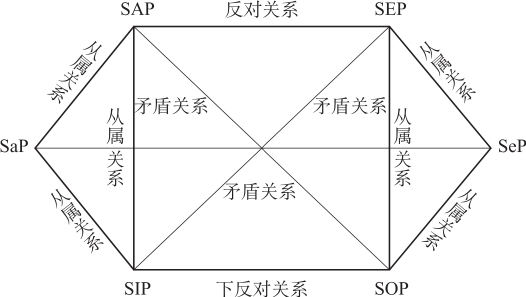
（二）特称量项的逻辑意义
逻辑语言是指形式逻辑中的语言，自然语言是指日常用语，逻辑语言只表示自然语言的真值抽象。形式逻辑要求我们只能按照其语言的字面意思来理解，而不能考虑其“言外之意”。也就是说，对逻辑语言来说，陈述中说到的一定有，没说到的则不一定。而自然语言（日常语言）则要考虑日常语言的隐含关系。
在自然语言中，当我们说“有些S是P”时，一般理解为“仅仅有些是”，因此它同时还意味着“有些S不是P”。反之亦然。即日常语言往往带有隐含，日常用语中的“有些”，大多指“仅仅有些”，因而当讲“有些是什么” 的时候，往往意味着“有些不是什么”。
但在逻辑语言中，不存在隐含。特称量项“有的”或“有些”的意思仅仅局限于“存在”或“有”，因此特称命题又被称为“存在命题”。特称命题的“有些”则只是表明判断对象肯定“存在着”，至于存在多少不一定，可能是一些，也可能是全部，但至少有一个“存在”。因此，当我们判断“有S是P”这样的命题的时，只表明至少有一个S是P，并没有同时断定“有S不是P”。同样，从“有些S不是P”，也不能推出“有些S是P”。即特称量项“有些”只是对主项的部分外延做了断定，并没有对它的全部外延做断定。即形式逻辑里的“有些”，则是指“至少有些”“至少有一个”，只表示一类事物中有对象被断定具有或不具有某种性质，而对这类对象的具体数量究竟有多少，则没有做出断定。也许有“一个”，也许有“几个”，也许“所有”。
（三）对当关系的直接推理
逻辑推理可以分为直接推理和间接推理。如果从唯一的前提出发，不经过任何中介推得结论，这样的推理叫作直接推理，而包括一个以上前提的推理叫作间接推理。
直接推理是一种最简单的演绎推理，是以一个命题为前提而推出结论的推理。直言命题的直接推理，是以一个直言命题为前提而推出一个直言命题的结论的直接推理。
以对当方阵为基础，可以得到许多直接推论。即给定任一标准式直言命题的真假情况，就可以直接得到其他某个或者所有其他相应命题的真假情况。具体推论结果如下：
①如果A真，那么，E假，I真，O假;
②如果A假，那么，O真，E、I真假不定;
③如果E真，那么，A假，I假，O真;
④如果E假，那么，I真，A、O真假不定;
⑤如果I真，那么，E假，A、O真假不定;
⑥如果I假，那么，A假、E真、O真;
⑦如果O真，那么，A假，E、I真假不定;
⑧如果O假，那么，A真，E假、I真。
根据逻辑方阵，我们可以由其中一命题的真假推知其他命题的真假。
直言推理中的形式谬误是指无效的直言推理，即违反直言命题的对当关系的推理规则所犯的谬误。
分析：“所有喜欢数学的学生都喜欢自然科学”与“有些学生喜欢数学但是不喜欢自然科学”矛盾，因此，上述推理错误。
分析：上述论证的前提是，有的中国运动员获得法网冠军。“有的”表示存在，可以是全部，可以是有些，也可以只是一个。因此，从这一前提推不出“有的中国运动员不能获得法网冠军”。
分析：没有人能逃过死亡的宿命，这意味着，所有人都逃不过死亡的宿命。
从陈述中给出的内容出发，从中抽象出同属于对当关系的逻辑形式，根据对当关系来分析判断。
①要把非标准的日常语言转为标准的逻辑语言。
②看清问题的条件和推理方向。审查问题时要注意两点：
一是，注意问题的条件：如上述断定为真，还是为假;
二是，注意问题的方向：下列哪项一定为真，一定为假，还是可能为真（即真假不确定）。
③从已知直言命题的真假，根据对当关系，来确定其他直言命题的真假。
分析：根据“企鹅是鸟，但企鹅不会飞”，可得出：存在不会飞的鸟。
分析：根据所给断定，第一，蝴蝶是一种昆虫；第二，蝴蝶翅膀一般色彩鲜艳。
分析：基本粒子不都可分=有的基本粒子不可分，这是O命题。
三段论是直言命题推理的核心理论，它不仅是演绎逻辑理论的重要组成部分，而且是言语交际中广泛使用的一种推理。
直言三段论是由包含一个共同的项的两个直言命题推出一个新的直言命题的推理。由于直言命题又叫性质命题，所以直言三段论又叫性质三段论。
（一）三段论的结构组成
三段论是常见的科学思维方法之一，是以一个一般性的原则（大前提）以及一个附属于一般性的原则的特殊化陈述（小前提），由此引申出一个符合一般性原则的特殊化陈述（结论）的过程。
三段论由大前提、小前提和结论组成，具体包括：一个包含大项和中项的命题（大前提）、一个包含小项和中项的命题（小前提）以及一个包含小项和大项的命题（结论）三部分。
分析：上述是一则直言三段论。
三段论推理是根据两个前提所表明的中项M与大项P和小项S之间的关系，通过中项M的媒介作用，从而推导出确定小项S与大项P之间关系的结论，如图所示。
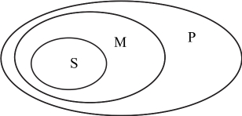
如果注意这些项所指的对象范围（外延），就会发现它们的大小是按照S< M< P的顺序排列的。由于在这里见到的这种外延的关系，所以分别称之为小项、中项和大项。
【案例】
草食动物
居维叶是法国古生物学家，又是比较解剖学的奠基者。有一次，他在睡午觉，被一阵怪里怪气的声音吵醒了。他发现窗口上有一个狰狞怪物，便仔细打量了一番，只见那怪物头上长角，脚上一双蹄子，于是笑道：“有角和蹄子的动物呀，都不是吃肉的。我才不怕呢。”说完又高枕而卧。这是一个调皮学生在跟老师捣蛋，但他没料到游戏这样轻易被戳穿。原来，根据比较解剖学，草食动物外表的特点是有蹄子，而凡是有蹄子的动物都有草食特性，而且性情温和。因此，在居维叶脑子里很快就形成了一个正确的三段论推理：
凡是有角和蹄子的动物都是不吃肉的，这个动物是有角和蹄子的动物，所以，这个动物是不吃肉的。
由于中项在前提中位置的不同而形成的三段论的各种形式称作三段论的格。如果中项在前提中的位置确定了，那么大项、小项的位置随之也可以确定了。因此，三段论的格也可以定义为由于各个项在前提中位置的不同而形成的各不相同的三段论形式。
根据中项在前提中的不同位置，三段论可分为以下四个格：
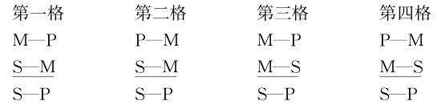
可见，在这四个格中，结论中的主项和谓项的位置（在下面）是固定的。这些格的主要区别是，前提中的中项的位置不同。其中，第一格的主谓项前提与结论没有发生变化，第二格的中项都是谓项，第三格的中项都是主项，第四格的主谓项位置都发生颠倒。
同一格的三段论也有差异，即它们的前提和结论中所涉及的直言命题的量词（全称、特称）和质（肯定、否定）是不同的，也就是说它们的“式”是不同的。
三段论的式就是构成三段论前提和结论的直言命题的组合形式。即，由于A、E、I、O四种命题在前提和结论中组合的不同而形成的三段论的各种形式称为三段论的式。例如，如果有一个三段论，其大前提为E命题，小前提为A命题，结论为O命题，那么这个三段论的式为EAO式。
逻辑学把单称命题作为一种特殊的全称命题处理。因为从对主项概念的断定看，全称和单称命题有共同性，即都具有周延性。在三段论中，单称判断常常作全称处理。
由于三段论的大、小前提及结论均可为A、E、I、O四种命题，其组合数量是： 4×4×4=64。因此，就其可能性而言，每格有64个式。由于三段论有四个格，因此三段论的可能式有4×64=256个。
当然，三段论的可能式，并非都是有效的。事实上，其大部分是无效的。经后续的三段论规则的检验，符合三段论规则的有效式只有24个，其余为无效式。
三段论的24个有效式如下表：
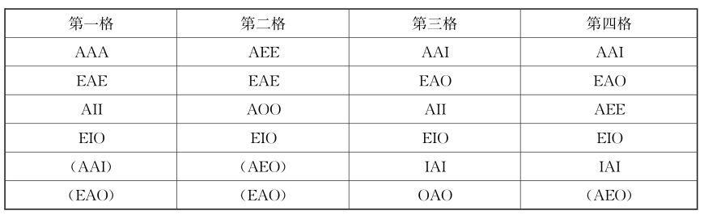
验证一个三段论正确的方法是：一个三段论是有效的，必须实现，当且仅当它是这个24个式中的一个。
上述24个有效式中，有5个带括号，称为弱式。所谓弱式，是指本来可以得出全称的结论，但却只得出了特称的结论。在逻辑学中，可以不把弱式看成是独立的有效式。这样，如果不算5个弱式，三段论共有19个“有效式”。
三段论的各个有效式，没必要一个个地熟记。其实，判定三段论是否有效，依据后续讲解的三段论的推理规则或者图示法就可以正确判断了。
（二）三段论的标准形式
直言三段论是由三个直言命题组成、能够被翻译成标准形式的演绎论证。
标准形式的直言三段论符合下面四个条件：
①所有三个陈述都是标准形式的直言命题。
②每个词项的两次出现都是相同的。
③在整个论证中每个词项始终在同一意义上被使用。
④首先列出大前提，其次列出小前提，最后列出结论。
给出一个三段论，要能准确地分析出它的标准形式结构，其分析步骤如下：
①首先找出结论，确定大项P和小项S。
根据逻辑联结词或论述重心来确定三句话中哪一句为结论，注意结论不一定是最后一句话，也可以是第一或第二句话。
确定了结论，也就确定了S、P。
结论的谓项为P，即三段论的大项。
结论的主项为S，即三段论的小项。
②然后确定中项M和大、小前提。
剩下的两句话为大、小前提，其共有的项即为中项M。
确定大前提，即含有大项P的前提;
确定小前提，即含有小项S的前提。
③再将三段论写成标准的形式结构。
列出三段论的顺序：第一位是大前提，第二位是小前提，结论在最后。
最后分别确定大前提、小前提和结论的AEIO判断类型，并写出它们的标准形式，也就确定了这个三段论的式与格。
注意：
第一，大、小前提的顺序不影响三段论结构。
第二，如果三段论不是三个概念，其中出现相反的概念，把它们转化为三个概念，化为标准形式。
第三，在三段论中，单称判断近似作全称处理。
分析：第一步：找出结论，确定大、小项。
【案例】
谋财杀人案
查理是个亿万富翁，有一天，他两岁的独生子突然失踪了，不久查理也暴病身亡。查理的妻子玛丽继承了丈夫的全部遗产。但玛丽有严重的心脏病，随时都可能死去。她日夜盼望失踪的儿子归来。十年后，她失踪的“儿子”回来了，脖子上挂着一个带有金项链的金盒子，小盒子里嵌着母亲玛丽的照片。玛丽验证后，确实无误，悲喜交集，就认下了儿子。并准备立一份她死后由儿子继承全部财产的遗嘱。玛丽的朋友建议她先化验一下儿子的血型再立遗嘱。遗憾的是，为他家服务多年的家庭医生一个月前辞职了。她们只得到医院去化验，经过化验，新来的儿子是A型血，玛丽是O型血，按照血型遗传法则， O型血的母亲是可以生出A型血的子女的，但是只知道母亲一方的血型，还不能完全断定儿子的真假，而其父查理已死多年，除了家庭医生谁也不知道查理的血型，可家庭医生辞职后已不知去向。但聪明的玛丽千方百计查找到了早已故去的查理父母的血型，其父母都是O型。按照血型遗传法则，父母双方都是O型血的，子女只能是O型血，所以查理必然是O型血。
查理是O型，玛丽是O型，那么他们的儿子也应该是O型，而新来的少年是A型。因此可以断定：这个新来的少年不是十年前玛丽失踪的儿子。这些疑团使玛丽下决心把这件事情查个水落石出，最后真相大白：原来十年前她儿子的失踪，她丈夫的暴病而亡，十年后“儿子”的归来，都是家庭医生精心策划的骗局。如果不是查清了查理的血型，就无法识破这个骗局，查理的亿万财产就会被家庭医生窃取。
分析：三段论推理是根据已知的一般原理、普遍规则，推断到尚未认知的特殊事例，从而获得关于特殊事例的新知识，在进行上述三段论推理之前，查理的血型怎么样、他们儿子的血型怎么样、新来的少年是不是他们的儿子，这些特殊事例的情况都是未知的。通过三段论推理，才获得了关于这些特殊事例的新知识，而获得这些新知识是解决问题的关键所在。
首先，确定查理的血型，运用的是三段论推理的第一格：凡父母均为O型血的子女为O型血，查理是父母均为O型血的子女，所以，查理是O型血。
其次，确定查理夫妇儿子的血型，运用的也是三段论推理的第一格：凡父母均为O型血的子女是O型血，查理夫妇的儿子是父母均为O型血的子女，所以，查理夫妇的儿子是O型血。
再次，确定新来的少年不是查理夫妇的儿子，运用的是三段论推理的第二格：查理夫妇的儿子是O型血，新来的少年不是O型血（是A型），所以，新来的少年不是查理夫妇的儿子。
直言三段论出现在日常用语中时，往往偏离标准形式，即并不是按照标准形式的三段论措辞的，因此，要对其进行逻辑考察，必须转化为规范的标准化形式。
若日常语言中看起来有三段论的论证形式，但包含着三个以上的词项，那么不能简单地把它看成犯了四项谬误的无效论证。只有化归为三段论的标准式才能根据规则判定是否有效。因此，需要考察包含着三个以上的词项的论证能不能被化归为与之逻辑上等价的只有三个词项的标准形式三段论，这样的方法叫作三段论词项数量的归约。完成这样的翻译要掌握以下两种方法：
（1）去除同义词
同义词并非不同的词项，应该翻译成相同的词项，即应当去除日常三段论论证中的同义词。
（2）去除补类
日常三段论论证中若有补类的词项，可以运用换质法、换位法、换质位法，从而减少词项的数量。
分析：上述论证含有四个词项，不是标准形式，不能直接用三段论规则检验。首先把它翻译为标准形式，四个词项中有两个（“爬行动物”和“非爬行动物”）互为补类。如果将结论进行换质，就可以减少词项的数量。翻译的结果是原论证的一个标准式翻版：
当然，标准式翻译版并不是唯一的，但三段论标准形式的化归都是通过换位法、换质法、换质位法等直接推论而实现的，不管何种形式的标准式翻译版，与原论证都是等价的，其是否有效的判定结果是相同的。
分析：这个三段论不具标准形式，因为它有六个词项：“工程师”“教授”“科学家”“非工程师”“非教授”和“非科学家”。下面用字母表示词项，重写上述论证，然后为了消去加否定的字母而将第一个前提换质，将结论换质位，从而得到归约了的论证：
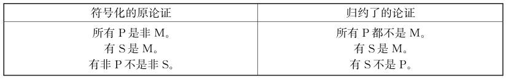
在减少词项的数目方面要注意，换位和换质位不得用于会产生未定的结果的陈述。具体而言，换位不得用于S和O陈述，换质位不得用于S和I陈述。被允许的运算可总结如下：
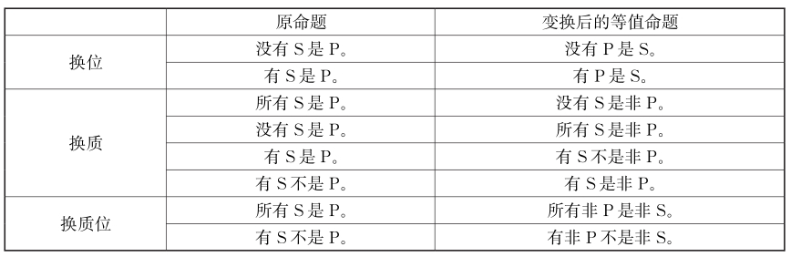
三段论结构比较着重考虑从具体的、有内容的思维过程的论述中抽象出一般形式结构，即用命题变项表示其中的单个命题，或用词项变项表示直言命题中的词项，每一个推理中相同的命题或词项用相同的变项表示，不同的命题或词项用不同的变项表示。进行三段论的结构比较时只需考虑抽象出推理结构和形式，而无需考虑其叙述内容的真实与否。
分析：这需要比较上文和各项的推理结构，下面是其标准化后的三段论结构：
分析：这需要比较题干和各项的推理结构，下面是其标准化后的三段论结构：
分析：这需要比较题干和各项的推理结构，下面是其标准化后的三段论结构：
一个直言三段论并非都能推得其结论，为避免推理错误，人们制定了一系列规则用来规范三段论推理。在三段论论证中，必须谨防违反推理规则，避免产生谬误。三段论谬误是指无效的直言三段论推理，即违反直言三段论的推理规则所犯的谬误。
（一）直言命题的周延性
为了更好地把握直言命题的逻辑特点和直言三段论的推理规则，首先要搞清直言命题的周延性。
如果一个概念的外延在命题中被全部做出了断定，那么这个概念就是一个周延的项;反之，则是一个不周延的项。具体对直言命题来说，其主谓项的周延性问题就是指主项和谓项概念的外延在命题中被断定的情况。在直言命题中，如果断定了一个词项的全部外延，则称它是周延的，否则就是不周延的。
关于直言命题的周延性问题，应注意以下两点：
①主、谓项的周延性是直言命题的形式决定的，而不是相对于直言命题所断定的对象本身的实际情况而言的。
②只有直言命题的主项和谓项才有周延与否的问题，离开直言命题的一个单独词项，就不存在是否周延的问题。
只有把这个概念置身于与它相关的那个判断的关系，使其在思维中构成一个完整的有内在联系的判断形式，才能从本质上确立是周延或不周延这个问题。
直言命题主项和谓项的周延情况分析如下：
（1）全称命题（A、E）的主项周延
全称命题的逻辑形式是“所有S都是（不是） P”，既然其中有“所有的S……”出现，那么，总是断定了主项“S”的全部外延，因此S在其中是周延的。
（2）特称命题（I、O）的主项不周延
特称命题的逻辑形式是“有的S是（不是） P”，它断定了至少有一部分外延是谓项P的部分外延或全部外延，没有指明主项“S”的全部外延，很明显地只涉及S的一部分外延，所以，主项S在其中是不周延的。
（3）肯定命题（A、I）的谓项不周延
肯定命题的逻辑形式是“所有（有的） S是P”，不论谓项P具体代表什么，它只断定了所有或某个数量的“S是P”，并没有具体说明究竟是全部的P还是一部分P，即断定了主项S的全部或部分外延是谓项P的部分外延，并没有断定主项S的全部或部分外延是谓项P的全部外延，因此谓项P在其中总是不周延的。
（4）否定命题（E、O）的谓项周延
否定命题的逻辑形式是“所有（有的） S不是P”，该命题断定了所有或某个数量的S“不是P”，那么P也一定不是这个数量的S，即把所有P都排除在这些S之外。即该命题否定了主项S的全部或部分外延是谓项P的全部外延，也就是说谓项P的全部外延都不是主项S的全部或部分的外延，这就断定了谓项P的全部外延，所以，谓项P是周延的。
基于以上分析， A、E、I、O四种直言命题主项和谓项的周延情况可概括如下表：
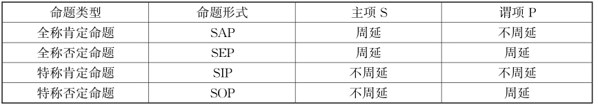
下面再分别论述：
（1） A命题的周延性
全称肯定命题的主项周延，谓项不周延。
（2） E命题的周延性
全称否定命题的主项周延，谓项也周延。
（3） I命题的周延性
在特称肯定命题中，主项、谓项都是不周延的。
（4） O命题的周延性
特称否定命题的谓项是周延的，但主项不周延。
周延问题在处理整个直言命题推理时是非常重要的。周延的用处是在推理中，结论周延的项，前提中该词项也必须周延。否则，如果结论周延的项，前提中该词项不周延，这样的推理一定是错误的。因为演绎推理是一种必然性推理，它的结论是从前提中抽引出来的，因而结论所断定的情况不能超出前提所断定的。这一点在直言命题推理中的表现就是要求“在前提中不周延的项在结论中不得周延”，否则推理的有效性就得不到保证，就会犯逻辑错误。
【案例】
一切鸡蛋都是圆的
《伊索寓言》中有这样一段文字：有一只狗习惯于吃鸡蛋。久而久之，它认为“一切鸡蛋都是圆的”。有一次，它看见一个圆圆的海螺，以为是鸡蛋，于是张开大嘴，一口就把海螺吞下肚去，肚子疼得直打滚。
分析：这只狗为什么上当？逻辑上讲，就是它把不周延的项变成周延的。在“一切鸡蛋都是圆的”这个全称肯定判断中，其谓项“圆的”不周延。而当它由这个判断进而得出：“圆的就是鸡蛋”时，就把“圆的”变成周延了。在直言命题推理中，要求“在前提中不周延的项在结论中不得周延”，所以狗犯了逻辑错误。
（二）三段论的推理规则
直言三段论的推理规则是进行三段论推理时必须遵守的规则，违反三段论的任一条规则，都不能得出正确的结论。
这个规则的依据是，一个有效的标准式直言三段论，必须仅仅包含三个项，即大项、中项和小项，三段论的实质就是借助于一个共同项即中项作为媒介，使大、小项发生逻辑关系，从而导出结论的。如果一个三段论只有两个词项或四个词项，那么大、小项就找不到一个联系的共同项，因而无从确定大、小项之间的关系。因此，一个正确的三段论仅允许有三个不同的词项。在整个论证中，每一个项都须在相同的意义上使用。即三个项所对应的三个概念，在其分别重复出现的两次中，所指的必须是同一个对象，具有同一的外延。
违背这条推理规则，就要犯“四概念错误”。所谓四概念错误就是指在一个三段论中出现了四个不同的概念。这种谬误通常源于语词歧义，即用同一个词或短语表达两种不同的含义。最常见的是中项的含义发生转换，中项的概念未保持同一而引起的，即同一个词以某种用法与小项发生联系，而以另一种用法与大项发生联系。这样一来，与结论中的两个项发生联系的是两个不同的项（而不是同一个中项），所以结论断定的关系也就不能成立。
分析：这个三段论的结论显然是错误的，但其两个前提都是真的。为什么会由两个真的前提推出一个假的结论呢？原因就在中项（我国的大学）未保持同一，出现了四概念的错误。即“我国的大学”这个语词在两个前提中所表示的概念是不同的。在大前提中它是表示我国的大学总体，表示的是一个集合概念。而在小前提中，它可以分别指我国大学中的某一所大学，表示的不是集合概念，而是一个个体概念。因此，它在两次重复出现时，实际上表示着两个不同的概念。这样，以其作为中项，也就无法将大项和小项必然地联系起来而推出正确的结论。
分析：这则论证是古希腊的诡辩家欧布利德的诡辩“你头上有角”，我们将其整理成下面一个三段论的形式：
这个规则的依据是小项和大项之间的联系需要中项做中介。而要建立这种联系，结论的主项或者谓项就必须与中项所指称类的全部对象相关联。
违背这条推理规则，就要犯“中项不周延”谬误。因为如果中项在前提中一次也没有周延，那么，中项在大、小前提中将会出现部分外延与大项相联系，并且部分外延与小项相联系，这样大、小项的关系就无法确定。因而推出结论所需要的词项关联就不能建立，从而无法通过推理得出确定的结论。
【案例】
绅士
富兰克林（18世纪美国著名科学家）有一次曾十分鄙夷地对客人说：“绅士都是些能吃、能喝、又能睡，可什么也不干的东西。”这话让他的仆人听到了。
过了几天，仆人对富兰克林说：“主人，我现在终于明白了原来猪都是绅士，因为它们都是些能吃、能喝、又有睡，可什么也不干的东西。”
富兰克林听后大笑起来。
分析：在这则幽默中，仆人的推理是这样的：“绅士都是能吃、能喝、又能睡，可什么也不干的东西; 猪都是能吃、能喝、又能睡，可什么也不干的东西;所以，猪都是绅士。”
仆人的逻辑错误在于违反了“中项在前提中必须周延一次”的逻辑规则。
这个规则的依据是有效的论证要求其前提必须能逻辑地推出结论，结论绝不能比前提断定得更多。
违背这条推理规则，就要犯“不当周延”的谬误。因为如果前提中的大项或小项是不周延的，那么它们的大项或小项的外延就没有被全部断定，若结论中的大项或小项变为周延的，那么就等于断定了大项或小项的全部外延。这样，就造成了前后不一致，结论所断定的对象范围就超出了前提所断定的对象范围，结论所断定的就不是从前提中所必然推出的，前提的真实就不能保证结论的必然真实，也就是不能得出必然的结论。“不当周延”的谬误可分为两类：
（1）大项不当周延
“大项不当周延”也叫“大项不当扩大”或“非法大项”，举例如下。
分析：这个论证不对，“导电体”在前提中不周延，但在结论中周延了，所以此处的谬误就是“非法大项”。
分析：很明显，这个论证是不对的，但错在哪里呢？就错在结论是对所有动物的断言，即结论断定的是所有动物都在猫的类之外，而前提并没有对所有动物做出断言，故结论不当地超出了前提的断定。
分析：这个推理从逻辑上说错在哪里呢？主要错在“需要懂得科学思维方法”这个大项在大前提中是不周延的（即“科学家”只是“需要懂得科学思维方法”中的一部分人，而不是其全部），而在结论中却周延了（成了否定命题的谓项）。这就是说，它的结论所断定的对象范围超出了前提所断定的对象范围，因而在这一推理中，结论就不是由其前提所能推出的。其前提的真也就不能保证结论的真。这种错误逻辑上称为“大项不当扩大”的错误。
（2）小项不当周延
“小项不当周延”也叫“小项不当扩大”或“非法小项”，举例如下。
【案例】
吃鱼的好处
甲：“吃鱼的好处是什么？”
乙：“可以预防近视”。
甲：“为什么？”
乙：“你见过猫有近视的吗？”
分析：在这个幽默中，乙的话隐含着这样一个直言推理：
这个规则的依据是直言否定命题都否认类的包含关系，断定一个类的部分或者全部被排除在另一类的全体之外，因此，由两个断定这种排斥性的前提不能得出结论中的联系。
违背这条推理规则，就要犯“两个否定前提”谬误。因为如果两个前提都是否定的，那么中项同大、小项都发生排斥。这样，中项就无法起到联结大、小前提的作用，小项同大项的关系也就无法确定，因而推不出结论。
分析：上例不能推出必然性的结论，因为，如果推出“这些学生是大学生”，但也有可能这些学生刚好是小学生呢，小学生显然也不是中学生；如果推出“这些学生不是大学生”，但也有可能这些学生刚好是大学生呢，大学生显然也不是中学生。
分析：上面两例的前提都是真实的，但都有“两个否定前提”，由于形式无效，所以推出的结论不具有必然性。
这条规则的依据如下：
第一，如果前提中有一个是否定命题，另一个则必然是肯定命题（否则，两个否定命题不能得出必然结论）。这样，中项在前提中就必然与一个项（大项或小项）是否定关系，与另一个项是肯定关系。这样，大项和小项通过中项联系起来的关系自然也就只能是一种否定关系，因而结论必然是否定的了。
第二，如果结论是否定的，那一定是由于前提中的大、小项有一个和中项结合，而另一个和中项排斥。这样，大项或小项同中项相排斥的那个前提就是否定的，所以结论是否定的，则前提之一必定是否定的。
这条规则还可派生出如下两个意思：第一，两个肯定的前提推不出否定的结论。第二，肯定的结论只能由两个肯定的前提得到。
违背这条推理规则，就要犯“不正确的肯定或否定”谬误。
分析：这个例子从两个肯定的前提中得出了否定的结论，违反了规则，因此是不正确的推理。
分析：这个例子从一个肯定前提和一个否定前提得出了肯定的结论，违反了规则，因此是不正确的推理。
这个规则的依据是如果两个前提都是特称的，那么前提中周延的项最多只能有一个（因为两个前提中最多只可以有一个是否定命题，而这一否定命题的谓项是周延的，其余的项都是不周延的）。而这就不可能满足正确推理的条件。
违背这条推理规则，就要犯“两个特称前提”谬误。
分析：由这两个特称前提，我们无法必然推出确定的结论。因为，在这个推理中的中项（“球迷”）一次也未能周延。
分析：这里，虽然中项有一次周延了，但仍无法得出必然结论。因为，在这两个前提中有一个是否定命题，按前面的规则，如果推出结论，则只能是否定命题；而如果是否定命题，则大项“商人”在结论中必然周延，但它在前提中是不周延的，所以必然又犯大项扩大的错误。
这个规则的依据是当前提中有一个判断是特称命题时，如果结论是全称命题，就必然会违反三段论的另几条规则（如出现大、小项不当扩大的错误等）。
违背这条推理规则，就要犯“不正确的特称或全称”谬误。
分析：这个例子从一个全称前提和一个特称前提中得出了全称的结论，违反了规则，因此是不正确的推理。
分析：这个例子从两个全称前提得出了特称的结论，违反了规则，因此是不正确的推理。
小结
三段论规则可分为关于词项的规则和关于前提的规则两个部分。为方便记忆，将三段论的上述七个规则总结如下：
（1）三个规则是关于词项的，要求“三个词项，一个周延，一个不周延”。
即关于词项的规则包括两个方面：
一方面有且只能有三个不同的项。
另一方面，要满足词项的周延性：①中项在前提中至少周延一次;②在前提中不周延的项在结论中也不得周延。
具体包括上述第1到第3条三条规则。
（2）四个规则是关于前提的，要求“两否无结，一否则否;两特无结，一特则特”。
即关于前提的规则包括两个方面：
一方面，要有正确的质（肯定或否定）：①两句前提都否定，得不出结论;②两句前提一肯定一否定，结论必然否定;③两句前提都肯定，结论必然肯定。
另一方面，要有正确的量（全称或特称）：①两句前提都特称，得不出结论;②两句前提一全称一特称，结论必然特称;③两句前提都全称，结论必然全称。
具体包括上述第4到第7条四条规则。
以上给出的规则只适用于标准式直言三段论，用以检验三段论论证的有效性。对于任一标准式直言三段论，如果违反了任一规则就是无效的。
分析：
直言命题还可以组成更复杂的推理，不过，推理的依据仍然是词项之间的关系。其中，复合三段论推理涉及到多个直言命题，需要连续运用三段论才能得出结论。省略三段论则需要补充省略的部分，再来考察三段论推理是否有效。三段论的推理除了可应用上述推理规则外，还可以借助图示法。
（一）三段论的图示法
前面所述，欧拉图可以表示任意两个概念之间的外延关系，而直言命题只不过是对两个概念（主项或谓项）之间外延关系的一种断定，因此，可以用欧拉图去表示任一直言命题中主项和谓项之间的外延关系。
欧拉图直观上相当清楚：圆之间的包含、相离表示全称，相交表示特称。这种方法既可以表示非空非全的类之间的关系，也可以揭示三段论和表示直接推理。因此，一个直言三段论推理是否有效，可以用欧拉图进行辅助判定。
当然，欧拉图也有其局限。人们可以通过处置欧拉图来帮助解决有关于三段论推理的问题，但难于表示更复杂的推理关系。因为欧拉图不能表示全类和空类、不能表示补运算，而且无法穷尽两个词项之间一切可能的关系。
直言三段论的有效判定可以通过欧拉图示法来辅助推理，具体作图步骤为：
①先判定题目中每两个概念的外延关系。
②在此基础上画出能从整体上反映这几个概念彼此之间外延关系的综合图形。
首先，用实线画固定的部分;其次，用虚线画不固定的部分。
③在每个圆圈的适当位置上标注。
由于欧拉图示法有时不具有唯一性，因此，图示法只能是帮助思考的辅助方法。作图后要注意以下两点：
①实线是否有重合的可能，即概念是否有同一关系的可能。
②虚线可能出现的位置。有时适合题目要求的情形不止一种，此时可用虚线表示，但要考虑到虚线可出现的多个位置的可能性。
分析：根据题意，艾博拿极稀少。北美的人都认识的那种红色叶子草在那里很常见。可以推出，北美的那种红色叶子的草不是艾博拿。因此，Ⅰ项得不出。
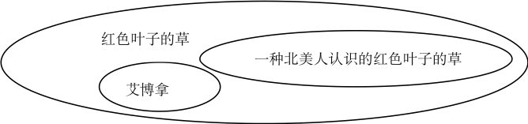
分析：上文断定：
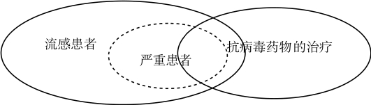
（二）复合三段论
复合三段论是由两个或两个以上的三段论构成的特殊的三段论形式。其中前一个三段论的结论组成后一个三段论的前提。它有以下两种形式：
（1）前进式的复合三段论它是以前一个三段论的结论作为后一个三段论的大前提的复合三段论。
在这个推理中，思维的进程是由范围较广的概念逐渐推移到范围较狭的概念，由较一般的知识推进到较特殊的知识。
（2）后退式的复合三段论
它是以前一个三段论的结论作为后一个三段论的小前提的复合三段论。
在这个推理中，思维的进程是由范围较窄的概念逐渐推移到范围较广的概念，由较特殊的知识推进到较一般的知识，即其思维推移的顺序正好和前提式相反。
把复合三段论的一系列中间结论都省略掉，只保留最后一个总结论，则构成连锁三段论。评价连锁三段论的步骤包含三步：
①把连锁推理置于标准形式。
②引入中间的结论。
③检验每个成分三段论的有效性。
如果每个成分都是有效的，连锁推理就是有效的。如果一个连锁推理中的任何一个成分三段论是非有效的，那么整个的连锁推理就是非有效的。
分析：标准形式的连锁推理是一个连锁推理，其中每一个成分命题都具标准形式，每个词项都出现两次，结论的谓项出现在第一个前提中，而且每个后继的前提都具有一个与前一个前提共同的词项。
在日常实际思维中，有时会进行一连串的推理，即同时运用几个三段论。在此过程中，要遵守三段论的推理规则来保证其推理的有效性。
分析：湟鱼是珍稀动物，凡是珍稀动物都是需要保护的动物。可得：湟鱼是需要保护的动物。
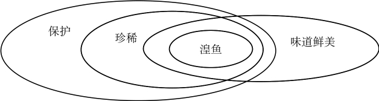
分析：Ⅰ可以从上文的前两句话推出来。因为，人应对自己的正常行为负责，这种负责甚至包括因行为触犯法律而承受制裁，所以，人的有些正常行为会导致触犯法律。
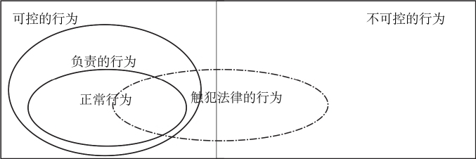
（三）省略三段论
三段论作为演绎推理的重要形式，实际上我们每个人经常运用它。在日常语言中，人们时常运用省去一个前提或结论的三段论，即省略三段论。省略三段论的前提或结论并不明确地陈述，具有简洁明了的特征，所以，被人们广泛地应用着。
在日常话语甚至科学中，许多推论都是省略式的，因为有相当一部分命题是公共知识。被省去的部分往往带有众所周知或不言而喻的性质，听众和读者很容易就能想到并且补充完整，说话者和写作者就不再重复以减少麻烦。因此，在这种推理中，虽然推理的某个部分被省去了，但整个推理还是容易为人们所理解的。
分析：这则论证是省略了大前提“濒临绝种的动物必须得到保护”的省略三段论，把省略后的前提补充进去后，得到如下完整且有效的三段论：
由于省略三段论中省去了三段论的某一构成部分，因此，如果运用不当，就容易隐藏以下两种逻辑错误。
①被省略的前提实际上是不成立的。
分析：该论证省略的前提是：蜘蛛结网受大脑控制。
②省略三段论所使用的推理形式是无效的。
分析：把这人的三段论推理补全了，就是：
（1）省略大前提的形式
三段论的第一种省略体指不出现大前提的情形。当大前提是众所周知的一般原则时，大前提常常被省略。
分析：这个推理就是省略了大前提：“凡真正的科学工作者都是不相信伪科学的”。现恢复其完整形式为：
（2）省略小前提的形式
三段论的第二种省略体保留大前提和结论，而不出现小前提。当小前提所表示的是一个非常明显的事实时，小前提往往被省略。
分析：这个推理省略了表示非常明显事实的小前提：“一切信息技术都是技术”。现恢复其完整形式为：
（3）省略结论的形式
三段论的第三种省略体中两个前提都出现，但未表述结论。当结论不说出来反而更有效果时，它就常被省略。
分析：这个推理省略了非常明显的事实的结论：“你是将被严厉处分的”，现恢复其完整形式为：
由于三段论的省略式不完整，所以，要检验其三段论的有效性必须找到被省略的部分，即把省略的三段论补充为完整的三段论，然后看其前提真不真，推理过程是否有效。
恢复省略三段论理论上的步骤是：
①首先确定结论是否被省略。
②如果结论没有省略，那就省略了前提。
③最后把省略的部分补充进去，并作适当的整理，就得到了省略三段论的完整形式。
在做了这些工作之后，再看被省略的前提是否真实，推理过程是否正确。
三段论的省略式经常出现的是省略前提，补充省略前提时最重要的原则是：论证者（说话人或作者）确实认为听者或读者可以接受这个命题为真。在做这种补充时，往往存在多种选择，这时应该坚持“仁慈原则”，即尽可能地把论证者设想为一个正常的、有理性的人，除非故意，他一般不会使用假的前提，一般不会进行无效的推理。
揭示三段论的省略前提的常规步骤如下：
①抓住结论和前提。
按陈述的顺序依次对前提和结论做出准确的理解。
②揭示省略前提。
查看已知前提与结论中有没有重合的两个项，将其联结起来。依据合理性原则，凭语感揭示出被省略的前提。
③检验推理的有效性。
把省略的前提补充进去，并作适当的整理，将推理恢复成标准形式，根据三段论的演绎推理规则检验上述推理是否有效。验证选项时，相对便捷的办法是借助作图法帮助判断。
分析：上文是个省略三段论，补充省略前提后构成一个有效的三段论推理：
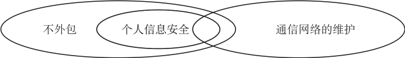
分析：上文是个省略三段论，补充省略前提后构成有效的三段论推理：
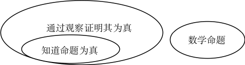
分析：上文是个省略三段论，补充假设后构成有效的三段论推理：
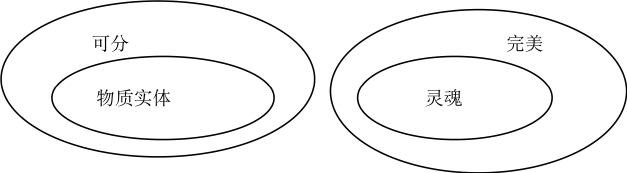